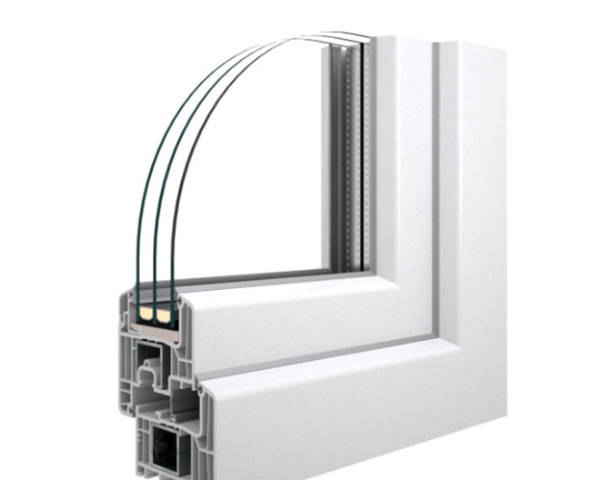
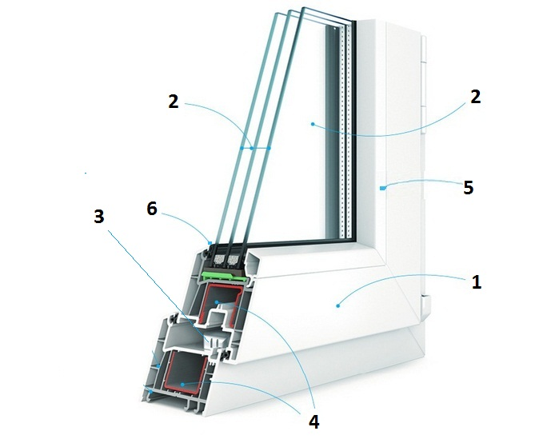
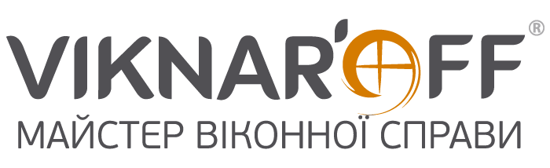

Ні для кого не секрет, що старі дерев’яні рами є сприятливим середовищем для шкідливих мікроорганізмів, які можуть мати поганий вплив на здоров’я людини. Окрім того, стан таких конструкцій досить швидко псується. Що стосується металопластикових вікон, то вони мають значно триваліший термін експлуатації і дозволяють зекономити велику кількість коштів. Металопластикові вікна також не мають жодного шкідливого впливу на здоров’я.
Новий виробник металопластикових вікон Viknaroff з’явився на ринку в 2005 році. Завод одразу почав використовувати найсучасніше обладнання, яке відповідає усім європейським стандартам. Протягом десяти років Viknaroff постійно модернізує та вдосконалює технології виробництва, що дозволяє потенційним клієнтам бути впевненими в якості продукції, яку вони купують.
З ЧОГО СКЛАДАЄТЬСЯ СУЧАСНЕ ПЛАСТИКОВЕ ВІКНО?

1. ПВХ-профіль— пластиковий корпус з поздовжніми перегородками всередині, що утворюють порожнини – повітряні камери, в залежності від їх кількості вікна з ПВХ поділяються на 3,4 та 5-ти камерні системи.
2. Склопакет – дві або більше скляні пластини, з’єднані між собою за допомогою спеціальної дистанційної рамки з перфорацією, заповненої спеціальними гранулами (абсорбентом), які поглинають залишкову вологість повітря і захищають скло від запотівання і замерзання. Також двох шарів герметиків, утворюючи замкнену порожнину, заповнену сухим повітрям або інертними газами (аргон чи криптон).
3. Фурнітура – механізм, встановлений в стулку, за допомогою якої можна повністю відкрити вікно чи встановити його в режим «провітрювання».
4. Армований підсилювач. Порожнини всередині профілю ПВХ підсилюються армованим профілем з оцинкованої сталі. За рахунок цього, конструкції витримують вітрове навантаження і не допускають провисання стулки під вагою склопакета.
5. Штапик – це елемент, призначений для утримання склопакета в стулці чи рамі. В сучасних вікнах є можливість вибору різних типів штапиків: скошений, заокруглений чи фігурний.
6. Ущільнювач – це пружна прокладка трубчастої або більше складної форми, що йде по всьому периметру вікна між рамою та стулками і захищає від шуму, вологи, і проникнення холодного повітря.
Переваги Вікон нашої компанії
Стінки профілю. Багато виробників не особливо звертають увагу на показник товщини стінок профілю, що в свою чергу, може вплинути на погіршення ряду якісних характеристик конструкції, таких як: зменшення міцності зварного шва, зменшення функціонального терміну, ударної міцності та стійкості до атмосферних впливів. Мінімально допустима товщина стінки, згідно з будівельними нормами – 2,6 мм. В наших конструкціях товщина зовнішньої стінки не менше 2,8 мм класу А, що забезпечує високу міцність та максимально довгий термін їх експлуатації.
Енергозберігаючі склопакети. Склопакет, напевно та частина вікна, на яку потрібно найбільше звернути увагу , не тільки через те що воно займає приблизно 85% загальної площі віконної рами, а й тому що через скло відбуваються найбільші втрати тепла. І власне вдалий вибір склопакету забезпечить максимальний комфорт у вашій оселі при значно менших затратах на опалення. І завдяки власній склопакетній лінії та жорсткому контролю якості, ми змогли досягнути максимальних показників збереження тепла в приміщенні.
Надійна фурнітура європейських виробників. Надійність, простота і зручність експлуатації майбутнього пластикового вікна, залежить від фурнітури. Ми пропонуємо встановити на ваше нове вікно фурнітуру провідних світових виробників – Siegenia (Німеччина), Romb (Німеччина), GU(Німеччина), Vorne(Туреччина). Незалежно від країни виробництва, ці марки забезпечують найвищу надійність, точність роботи, а також різні додаткові функції, які є базовими, наприклад – вбудовану функцію мікропровітрювання, мікроліфт та блокування ручки від неправильного відкривання.
Квадратне армування. Достатню увагу ми приділяємо армуванню віконної рами, оскільки від надійного металевого підсилення залежать статичні властивості конструкції. Особливу увага приділяється ламінованим конструкціям, оскільки вони найбільш вразливі до деформації. В наших конструкціях метал товщиною 1,5 мм.
Еластичні ущільнювачі Ущільнювачі є важливим елементом вікна. Саме ущільнювачі забезпечують щільність з’єднання, захищають від пилу, сторонніх звуків, та не дають можливості холоду проникнути в приміщення. Однак ущільнювач є дуже тендітною деталлю віконної рами і потребує постійного догляду. Наша компанія використовує ущільнювачі тільки з каучуку, які надзвичайно стійкі до перепаду температур, та довго прослужать при експлуатації.
На фоні підвищення цін на енергоносії, тема теплоізоляції стала надзвичайно актуальною. Тому доводиться впроваджувати нові сучасні технології для більш ефективного використання теплової енергії. Наша компанія не є виключенням, тому пропонуємо Вам якісні металопластикові вікна з досконалою системою енергозбереження.
Ми дбаємо про тепло і затишок вашої оселі.

У наші дні компанія Viknaroff є однією з найбільш автоматизованих компаній із виробництва металопластикових конструкцій. Даний виробник також займається випуском дверей, підвіконь та фурнітури. Viknaroff славиться чудовим співвідношенням ціни та якості, яка підтверджується не тільки сертифікатами, але й численними позитивними відгуками клієнтів.
Під час виробництва вікна проходять кілька етапів контролю якості, завдяки чому повністю виключається поставка неякісних виробів. Продукція має тривалий термін експлуатації і володіє чудовими експлуатаційними характеристиками.
ВІКОННІ СИСТЕМИ VIKNAROFF: ПЕРЕВАГИ
Для того щоб визначитись із необхідністю покупки вікон Viknaroff, рекомендуємо вам ознайомитись із їхніми основними перевагами. До основних плюсів можна віднести:
1. Надійність;
2. Простий спосіб монтажу;
3. Відповідність європейським стандартам;
4. Захист приміщення від вологи, грибка та інших шкідливих мікроорганізмів;
5. Зберігання тепла взимку і прохолоди в літній період;
6. Стійкість до дії зовнішніх факторів;
7. Доступні ціни.
Ще однією надзвичайно важливою особливістю металопластикових вікон є той факт, що вони не займаються у випадку пожежі. За ними дуже легко доглядати (достатньо буде просто регулярно мити та протирати їх сухою ганчіркою), вони не іржавіють та мають чудову шумоізоляцію. Вікна Viknaroff не дозволяють накопичуватись конденсату та не псуються під дією снігу та дощу. На відміну від скляних вікон, металопластикові надзвичайно міцні та не розбиваються від удару маленького камінчика.